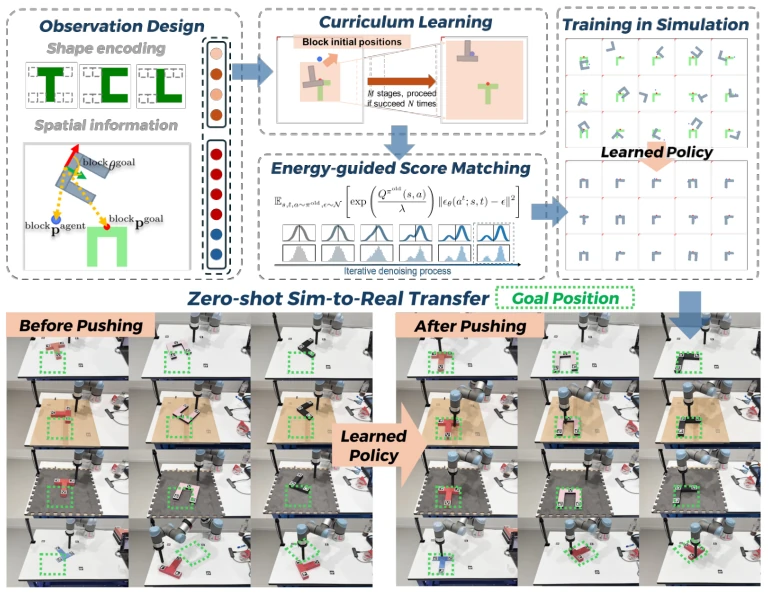
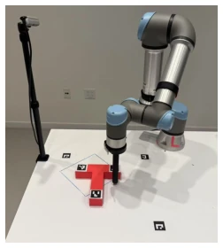
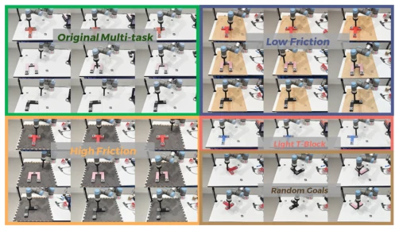

This paper attempts to train diffusion policies from scratch using online reinforcement learning (RL), rather than relying on behavior cloning (BC). The highlight lies in achieving zero Sim-to-Real transfer for multi-task block pushing (different shapes, weights, friction), which is rare in contact-rich tasks. The ESM loss function proposed by the authors simplifies the combination of RL and diffusion, proving more robust than methods like QVPO. However, a critique is that, although the block pushing task is classic, it is on a 2D plane after all, so the difficulty ceiling is limited compared to complex humanoid manipulation or dexterous hand grasping. The so-called "general policy" is currently limited to just pushing, although the authors emphasize multimodality, no more complex interactions were seen. However, being able to achieve zero transfer relying only on sparse rewards without expert demonstrations is indeed worthy of a good review, at least proving that the potential of diffusion policies in RL has not been overshadowed by BC. Additionally, the paper's performance on real robots is better than SAC, but SAC performs passably in simulation, indicating that the Sim-to-Real gap still exists, only diffusion policies are more robust.
Existing diffusion policies are mostly based on behavior cloning (BC) [6], relying on large amounts of expert demonstrations, difficult to extend to multi-task scenarios, and fine-tuning easily leads to catastrophic forgetting. Although online reinforcement learning (RL) is suitable for multi-task learning [19], [20], research directly applied to diffusion policies is scarce, and Sim-to-Real transfer is a huge challenge [22]. This paper aims to solve multi-task contact manipulation learning without demonstration data, utilizing the expressive power of diffusion policies to capture multimodal solutions, while using RL to solve exploration difficulties, achieving zero transfer. Especially addressing the problem where unstable contact points in contact-rich tasks amplify the Sim-to-Real gap, this paper proposes a complete RL training Pipeline, attempting to prove that diffusion policies can become the foundation of general policies without BC.
The overall process is training diffusion policies based on an online RL framework. Core innovations include: 1) Loss function: Propose Energy-guided Score Matching (ESM) loss, using the exponential action value function in the closed-form solution of policy mirror descent as a reweighting factor, replacing traditional ELBO, avoiding baseline estimation bias [10], [11]. 2) State space: Adopt objective-centric representation, transform observations to block frame, implicitly encode target position, reducing task complexity. 3) Curriculum learning: Use Reverse Curriculum Generation [30], gradually increase pushing distance from near to far, solving exploration problems under sparse rewards. 4) Action space: Output velocity commands. Perception module is responsible for estimating block pose (ArUco or point cloud), supporting Sim-to-Real. Through this design, the policy can adapt to different block shapes and friction, without retraining.

Fig. 1. (Upper) The pipeline we propose to train the diffusion policies with RL to solve the multi-task block-pushing task. (Lower) The learned diffusion policy can achieve zero-shot transfer to real-world block-pushing tasks with different block shapes, block weights, frictions, and goal poses. More figures and videos are available at https://diffusionpolicyrl.site/.

Fig. 8. Real-world configuration of the block-pushing tasks.
Simulation environment based on PyMunk, comparing SAC, PPO, TD3, and QVPO, etc. Metrics are success rate and steps. ESM achieves 100% success on trained shapes, 61% on unseen shapes (I-block), far exceeding SAC. Ablation experiments prove curriculum learning and state design are crucial. Real world uses UR5e manipulator, testing different friction (mat/paper), weight (thickness), target pose. ESM achieves zero transfer success, SAC fails on T-block. Proves robustness of diffusion policies in contact tasks. In specific data, ESM has fewer steps and shorter distance in real tasks, indicating the policy is more efficient.

Fig. 9. All evaluation tasks in the real-world setting. Figures show the final timestep with successful pushing. Some initial states are shown in Figure 1.